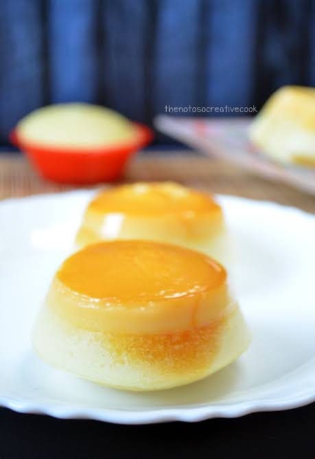

About Puto Leche
Puto Leche is a soft and delicate Filipino steamed rice cake topped with a smooth and creamy leche flan. The combination of fluffy puto and rich leche flan creates a delicious balance of textures and flavors.
Each piece is carefully steamed and topped with creamy leche flan, making it a special Filipino snack or dessert.
Ingredients
- Rice flour
- All-purpose flour
- Sugar
- Baking powder
- Coconut milk
- Evaporated milk
- Eggs
- Condensed milk
- Salt
- Secret Ingredient
Product Specifications
| Product | Flavor | Color | Size | Price |
|---|---|---|---|---|
| Puto Leche | Leche Flan | Yellow | Regular | Please inquire |